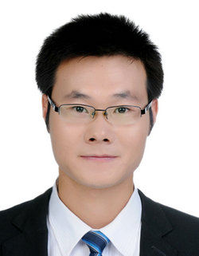

唐厂，中国地质大学（武汉）计算机学院教授，博士生导师，2016年博士毕业于天津大学电子信息工程学院信息与通信工程专业，曾于2014年9月至2015年9月在澳大利亚University of Wollongong计算机科学与技术学院交流学习一年。入选2019年度湖北省级人才计划和武汉市朝阳计划。目前为IEEE、CAAI和CCF会员，CCF理论计算机科学专委和人工智能专委委员，全国高校大数据教育联盟委员会委员，SCI期刊BioMed Research International和BMC Bioinformatics编委，中国人工智能学会会刊《CAAI Transactions on Intelligence Technology》以及《计算机工程》青年编委。 研究方向为机器学习和计算机视觉。近5年以来主持国家自然科学基金青年项目、面上项目、湖北省自然科学基金面上项目以及华为-MindSpore创新基金等科研项目7项。 以第一作者身份发表SCI检索期刊学术论文和CCF A类会议论文共计50余篇（包括IEEE T-PAMI、 IEEE T-MM、IEEE T-KDE、 IEEE T-HMS、IEEE SPL、ICCV、 CVPR、 IJCAI、 AAAI and ACM-MM等），ESI高被引论文一篇。此外，还长期担任IEEE T-PAMI、IEEE T-MM、 IEEE T-KDE、IEEE T-HMS、IEEE SPL、 IEEE T-Cyb、 IEEE T-KDE、IEEE T-CSVT、PR、Knowledge-Based Systems、Information Sciences、Information Fusion、Expert Systems With Applications及Neurocomputing等国际著名期刊的审稿人，长期担任CCF A/B类顶级会议NeurIPS、ICML、ICLR、CVPR、ICCV、IJCAI、AAAI、ECCV、ICME等的程序委员会委员或领域主席。
Chang Tang (M'16) received his Ph.D. degree from Tianjin University, Tianjin, China in 2016. He joined the AMRL Lab of the University of Wollongong between Sep. 2014 and Sep. 2015. He is now a full professor at the School of Computer Science, China University of Geosciences, Wuhan, China. Dr. Tang has published 50+ peer-reviewed papers, including those in highly regarded journals and conferences such as IEEE T-PAMI, IEEE T-MM, IEEE T-KDE, IEEE T-HMS, ICCV, CVPR, IJCAI, AAAI and ACM MM, etc. He serves as an associate editor of BioMed Research International, BMC Bioinformatics, young editor of CAAI Transactions on Intelligence Technology, and Computer Engineering. He regularly serves on the Technical Program Committees or as Area Chair of some top conferences such as NIPS, ICML, CVPR, ICCV, ECCV, IJCAI, ICME and AAAI. His current research interests include machine learning and computer vision.
教育经历：
2014.09-2015.09: 澳大利亚卧龙岗大学(University of Wollongong, UOW)先进多媒体研究实验室，联合培养,导师Wanqing Li教授
2012.09-2016.01: 天津大学电子信息工程学院，信息与通信工程专业，博士研究生， 导师侯春萍教授
2010.09-2012.12: 天津大学电子信息工程学院，信息与通信工程专业，硕士研究生， 导师宋占杰教授
2006.09-2010.07: 天津工程师范学院电子信息工程系，通信工程专业，本科
论文列表：
--一作会议：
- Chang Tang, Liu Xinwang, Zhang Wei, Wang Lizhe, Zomaya Albert, "Hyperspectral Band Selection via Spatial-Spectral Weighted Region-wise Multiple Graph Fusion-Based Spectral Clustering", IJCAI 2021.
- Chang Tang, Xinwang Liu, Xinzhong Zhu, En Zhu, Kun Sun, Pichao Wang, Lizhe Wang, Albert Zomaya, "R2MRF: Defocus Blur Detection via Recurrently Refining Multi-scale Residual Features", AAAI Conference on Artificial Intelligence (AAAI), 12063-12070, 2020. (CCF A)
- Chang Tang, Xinwang Liu, Xinzhong Zhu, En Zhu, Zhigang Luo, Lizhe Wang, Wen Gao, "CGD: Multi-view Clustering via Cross-view Graph Diffusion", AAAI Conference on Artificial Intelligence (AAAI), 5924-5931, 2020. (CCF A)
- Chang Tang, Xinwang Liu, Xinzhong Zhu, Lizhe Wang, Albert Zomaya, "DeFusionNET: Defocus Blur Detection via Recurrently Fusing and Refining Multi-scale Deep Features", IEEE Conference on Computer Vision and Pattern Recognition (CVPR), 2700-2709, 2019. (CCF A)
- Chang Tang, Xinwang Liu, Xinzhong Zhu, Pichao Wang, "Salient Object Detection via Recurrently Aggregating Spatial Attention Weighted Cross-level Deep Features", IEEE International Conference on Multimedia and Expo (ICME), 1546-1551, 2019. (CCF B)
- Chang Tang, Xinzhong Zhu, Xinwang Liu, Lizhe Wang, "Cross-view Local Structure Preserved Diversity and Consensus Learning for Multi-view Unsupervised Feature Selection", AAAI Conference on Artificial Intelligence (AAAI), 5101-5108, 2019. (CCF A)
-
--一作期刊：
- Tang Chang, Xiao Zheng, Xinwang Liu, Wei Zhang, Jing Zhang, Jian Xiong, and Lizhe Wang. "Cross-view Locality Preserved Diversity and Consensus Learning for Multi-view Unsupervised Feature Selection." IEEE Transactions on Knowledge and Data Engineering (2021).
- Chang Tang, Liu Xinwang, Xiao Zheng, Wanqing Li, Jian Xiong, Lizhe Wang, Albert Zomaya, and Antonella Longo. "DeFusionNET: Defocus Blur Detection via Recurrently Fusing and Refining Discriminative Multi-scale Deep Features." IEEE Transactions on Pattern Analysis and Machine Intelligence (2020).
- Chang Tang, Xinwang Liu, Shan An, Pichao Wang, "BR2Net: Defocus Blur Detection via a Bi-directional Channel Attention Residual Refining Network", IEEE Transactions on Multimedia (IEEE T-MM), Accepted, DOI: https://doi.org/10.1109/TMM.2020.2985541, 2020. (CCF B)
- Chang Tang, Xinzhong Zhu, Xinwang Liu, Miaomiao Li, Pichao Wang, Changqing Zhang and Lizhe Wang, "Learning a Joint Affinity Graph for Multiview Subspace Clustering", IEEE Transactions on Multimedia (IEEE T-MM), 21(7), 1724-1736, 2019. (CCF B)
- Chang Tang, Xinwang Liu, Pichao Wang, Changqing Zhang, Miaomiao Li, Lizhe Wang, "Adaptive Hypergraph Embedded Semi-Supervised Multi-Label Image Annotation", IEEE Transactions on Multimedia (IEEE T-MM), 21(11), 2837-2849, 2019. (CCF B)
- Chang Tang, Xinwang Liu, Xinzhong Zhu, Jian Xiong, Miaomiao Li, Jingyuan Xia, Xiangke Wang, Lizhe Wang, "Feature Selective Projection with Low-Rank Embedding and Dual Laplacian Regularization", IEEE Transactions on Knowledge and Data Engineering (IEEE T-KDE), 32(9): 1747-1760, 2020. (CCF A)
- Chang Tang, Meiru Bian, Xinwang Liu, Miaomiao Li, Hua Zhou, Pichao Wang, Hailin Yin, "Unsupervised Feature Selection via Latent Representation Learning and Manifold Regularization", Neural Networks, 117, 163-178, 2019. (CCF B)
- Chang Tang, Hua Zhou, Xiao Zheng, Yanming Zhang, Xiaofeng Sha, "Dual Laplacian regularized matrix completion for microRNA-disease associations prediction", RNA Biology, 16(5), 601-611, 2019.
- Chang Tang, Wanqing Li, Pichao Wang, Lizhe Wang "Online Action Recognition Based on Incremental Learning of Weighted Covariance Descriptors", Information Sciences, 467, 219-237 , 2018. (CCF B)
- Chang Tang, Jiajia Chen, Xinwang Liu, Miaomiao Li, Pichao Wang, Minhui Wang, Peng Lu, "Consensus Learning Guided Multi-view Unsupervised Feature Selection", Knowledge-Based Systems, 160, 49-60, 2018.
- Xinzhong Zhu*, Chang Tang*, Pichao Wang, Huiying Xu, Minhui Wang, Jie Tian, "Saliency Detection via Affinity Graph Learning and Weighted Manifold Ranking", Neurocomputing, 312, 239-250, 2018.
- Chang Tang, Xinzhong Zhu, Jiajia Chen, Pichao Wang, Xinwang Liu, Jie Tian, "Robust Graph Regularized Unsupervised Feature Selection", Expert Systems With Applications(ESWA), 96(C), 64-76, 2018.
- Chang Tang, Xinwang Liu, Miaomiao Li, Pichao Wang, Jiajia Chen, Lizhe Wang, Wanqing Li, "Robust Unsupervised Feature Selection via Dual Self-representation and Manifold Regularization", Knowledge-Based Systems(KBS), 145, 109-120, 2018.
- Chang Tang, Lijuan Cao, Xiao Zheng, Minhui Wang, "Gene selection for microarray data classification via subspace learning and manifold regularization", Medical & Biological Engineering & Computing(MBEC), 56(7), 1271–1284, 2018.
- Chang Tang, Pichao Wang, Changqing Zhang, Wanqing Li, "Salient Object Detection via Weighted Low Rank Matrix Recovery", IEEE Signal Processing Letters (IEEE SPL)24(4), 490-494, 2017.
- Chang Tang, Chunping Hou, Yonghong Hou, Pichao Wang, Wanqing Li, "An Effective Edge-preserving Smoothing Method for Image Manipulation", Elsevier Digital Signal Processing (Elsevier DSP)10, 10-24, 2017.
- Chang Tang, Lijuan Cao, Jiajia Chen, Xiao Zheng, "Speckle noise reduction for optical coherence tomography images via non-local weighted group low-rank representation", Laser Physics Letters, 14(5), 2017.
- Chang Tang, Xiao Zheng, Lijuan Cao, "OCT despeckling via weighted nuclear norm constrained non-local low-rank representation", Laser Physics Letters, 14(106001), 2017.
- Chang Tang, Jin Wu, Yonghong Hou, Pichao Wang, Wanqing Li, "A spectral and spatial approach of coarse-to-fine blurred image region detection", IEEE Signal Processing Letters (IEEE SPL), 23(11), 1652-1656, 2016.
- Chang Tang, Chunping Hou, Pichao Wang, Zhanjie Song, "Salient object detection using color spatial distribution and minimum spanning tree weight", Multimedia Tools and Applications, 75(12), 6963-6978, 2015.
- Chang Tang, Chunping Hou, and Zhanjie Song, "Depth recovery and refinement from a single image using defocus cues", Journal of Modern Optics, 62(3), 204-211, 2014.
- Chang Tang, Chunping Hou, and Zhanjie Song, "Defocus map estimation from a single image via spectrum contrast", Optics Letters, 38(10), 1706-1708, 2013.
--其他作者会议：
- Zhenglai Li, Chang Tang*, Xinwang Liu, Xiao Zheng, Wei Zhang, En Zhu, "Tensor-based Multi-view Block-diagonal Structure Diffusion for Clustering Incomplete Multi-view Data", IEEE ICME, 2021.
- Xinwang Liu, Xinzhong Zhu, Miaomiao Li, Chang Tang, En Zhu, Jianping Yin, Wen Gao, "Efficient and Effective Incomplete Multi-view Clustering", AAAI, 4392-4399, 2019.
- Siwei Wang, Xinwang Liu, En Zhu, Chang Tang, Jiyuan Liu, Jingtao Hu, Jingyuan Xia, Jianping Yin, "Multi-view Clustering via Late Fusion Alignment Maximization", IJCAI, 3778-3784, 2019.
- Pichao Wang, Wanqing Li, Zhimin Gao, Yuyao Zhang, Chang Tang, Philip Ogunbona, "Scene Flow to Action Map: A New Representation for RGB-D based Action Recognition with Convolutional Neural Networks", IEEE Conference on Computer Vision and Pattern Recognition( CVPR), 595-604, 2017.
- Pichao Wang, Wanqing Li, Song Liu, Zhimin Gao, Chang Tang, Philip Ogunbona, "Large-scale Isolated Gesture Recognition Using Convolutional Neural Networks", in ChaLearn Looking at People (LAP) Challenge, ICPR2016, 2016, (rank the 2nd place).
- Jing Zhang, Wanqing Li, Pichao Wang, Philip Ogunbona, Song Liu and, Chang Tang, "A Large Scale RGB-D Dataset for Action Recognition", International Workshop on Understanding Human Activities through 3D Sensors (UHA3DS workshop@ICPR2016), 2016.
- Pichao Wang, Wanqing Li, Zhimin Gao, Chang Tang, Jing Zhang, Philip O. Ogunbona. , "ConvNets-Based Action Recognition from Depth Maps through Virtual Cameras and Pseudocoloring", ACM international conference on Multimedia(ACMM), 1119-1122, 2015.(CCF A)
- Lei Wang, Jianjia Zhang, Luping Zhou, Chang Tang, Wanqing Li, "Beyond Covariance: Feature Representation with Nonlinear Kernel matrices", IEEE International Conference on Computer Vision (ICCV), 4570-4578, 2015. (CCF A)
--其他作者期刊：
- Zhenglai Li, Chang Tang*, Xinwang Liu, Xiao Zheng, Wei Zhang, En Zhu, "Consensus Graph Learning for Multi-view Clustering". IEEE Transactions on Multimedia (Accepted), 2021.
- Hanyu Yang, Xutao Li, Wenhao Qiang, Yuhan Zhao, Wei Zhang*, Chang Tang*, "A network traffic forecasting method based on SA optimized ARIMA–BP neural network", Computer Networks, 193(108102), 2021.
- Zheng Xiao, Jiajia Chen, Chang Tang, and Suqin Zhou. "Single-Cell RNA-Sequencing Data Clustering via Locality Preserving Kernel Matrix Alignment." IEEE Access 8 (2020): 201577-201594.
- Deqiong Ding, Xiaogao Yang, Fei Xia, Tiefeng Ma, Haiyun Liu, Chang Tang, "Unsupervised feature selection via adaptive hypergraph regularized latent representation learning", Neurocomputing, 378, 79-97, 2020.
- Deqiong Ding, Fei Xia, Xiaogao Yang, Chang Tang*, "Joint dictionary and graph learning for unsupervised feature selection", Applied Intelligence, DOI: https://doi.org/10.1007/s10489-019-01561-x, 2020. (通讯作者)
- Zhenglai Li, Chang Tang*, Jiajia Chen, Cheng Wan, Weiqing Yan, Xinwang Liu, "Diversity and consistency learning guided spectral embedding for multi-view clustering", Neurocomputing, 370, 128-139, 2019. (通讯作者)
- Xinwang Liu, Xinzhong Zhu, Miaomiao Li, Lei Wang, Chang Tang, Jianping Yin, Dinggang Shen, Huaimin Wang, Wen Gao, "Late Fusion Incomplete Multi-view Clustering", IEEE Transactions on Pattern Analysis and Machine Intelligence (IEEE T-PAMI), 41(10), 2410 - 2423, 2019. (CCF A)
- Xinwang Liu, Miaomiao Li, Chang Tang, Jingyuan Xia, Jian Xiong, Li Liu, Marius Kloft, En Zhu, "Efficient and Effective Regularized Incomplete Multi-view Clustering", IEEE Transactions on Pattern Analysis and Machine Intelligence (IEEE T-PAMI), 2020.
- Miaomiao Li, Zhenglai Li, Chang Tang, Xinwang Liu, Lulu Wang, "Robust Multi-View Clustering With A Unified Weight Learning Paradigm", IEEE Access, 7, 177965-177973, 2020.
- Weiqing Yan, Guanghui Yue, Yuming Fang, Hua Chen, Chang Tang, Gangyi Jiang, "Perceptual Objective Quality Assessment of Stereoscopic Stitched Images", Signal Processing, 172(107541), 2020.
- WeiqingYan, Guanghui Yue, Jindong Xu, Yanwei Yu, Kai Wang, Chang Tang, Xiangrong Tong, "Shape-optimizing mesh warping method for stereoscopic panorama stitching", Information Sciences, 511, 58-73, 2020.
- Yawei Zhao, En Zhu, Xinwang Liu, Chang Tang, Deke Guo, Jianping Yin, "Simultaneous Clustering and Optimization for Evolving Datasets", IEEE Transactions on Knowledge and Data Engineering, 2019.
- Xiao Zheng, Wenyang Zhu, Chang Tang, Minhui Wang, "Gene selection for microarray data classification via adaptive hypergraph embedded dictionary learning", Gene, 706, 188-200, 2019.
- Shaoyong Li, Chang Tang, Xinwang Liu, Yaping Liu, Jiajia Chen, "Dual graph regularized compact feature representation for unsupervised feature selection", Neurocomputing, 331, 77-96, 2019.
- Minhui Wang, Chang Tang, Jiajia Chen, "Drug-Target Interaction Prediction via Dual Laplacian Graph Regularized Matrix Completion", BioMed Research International, 1425608, 2018.
- Pichao Wang, Wanqing Li, Zhimin Gao, Chang Tang, Ogunbona Philip, "Depth Pooling Based Large-scale 3D Action Recognition with Convolutional Neural Networks", IEEE Transactions on Multimedia(TMM), 20(5), 1051-1061, 2018.
- Shuang Wang, Yonghong Hou, Zhaoyang Li, Jiarong Dong, Chang Tang*, "Combining ConvNets with hand-crafted features for action recognition based on an HMM-SVM classifier", Multimedia Tools and Application, 2017 (Accepted). (通讯作者)
- Jing Zhang, Wanqing Li, Philip Ogunbona, Pichao Wang, Chang Tang, "RGB-D-based Action Recognition Datasets: A Survey", Pattern Recognition, 60(1), 86-105, 2016.
- Wang Pichao, Li Wanqing, Gao Zhimin, Zhang Jing, Chang Tang, Ogunbona Philip, "Action Recognition From Depth Maps Using Deep Convolutional Neural Networks", IEEE Transactions on Human-machine Systems, pp(99), 1-12, 2015. (通讯作者)